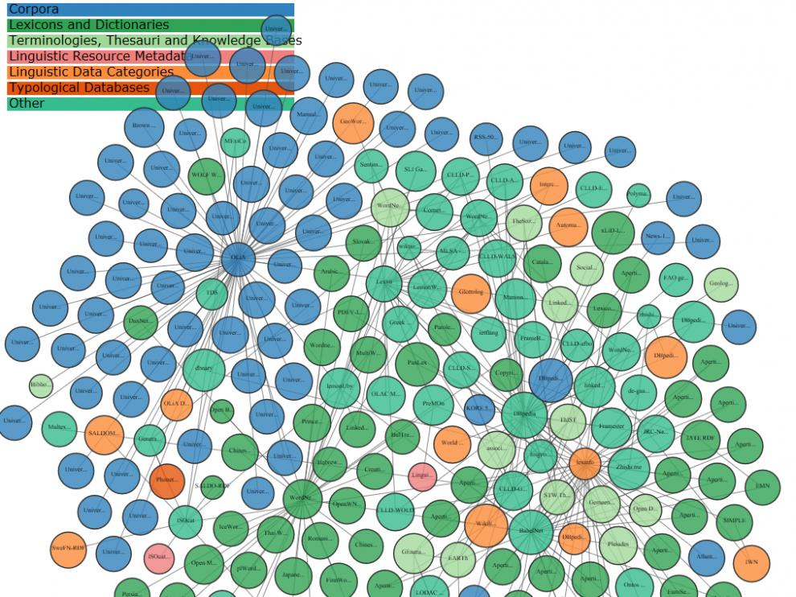

[First published in Spanish by www.heraldo.es on 17/6/2019. See link]
Language technologies allow us to create computer applications to analyze and process written and spoken natural language. They play a key role in overcoming linguistic barriers across Europe and gradually are paving the way towards a true digital single market.\ However, the data such applications require are hardly "ready to use". This moves human experts to devote 80% of their time to data recollection from diverse sources, as well as to its later curation and organization.
How can an online store founded in Spain succeed in reaching its Bulgarian, Estonian or Portuguese-speaking clients?\ Multilingualism in an undeniable cultural and social asset, but it also may pose obstacles in the dissemination and adoption of digital services in Internet across multiple countries. To overcome these linguistic barriers, in October 2017 the European Commission launched the call ‘A multilingual Next Generation Internet’ in the framework of the H2020 funding program. Prêt-à-LLOD, started in January 2019, is one of the granted projects.\
The ultimate goal of Prêt-à-LLOD is to create an ecosystem of "ready-to-use" linguistic linked data for natural language processing services and applications to exploit. This in turn aims at promoting the development of a new generation of interoperable services to consume such data. Resources will be linked and accessible by means of semantic web technologies, and project partners will provide a set of applications and tools to address each need in the different phases of the data and applications lifecycle: data generation, linking, service development, etc. Methodologies to build data value chains for a range of sectors and applications will be proposed as well.\ Linguistic Linked Open Data (LLOD) emerges as an essential technology for the project. Thanks to them, data coming from linguistic resources such as dictionaries, corpora, glossaries, etc. can be transformed to the format of Linked Data for their publication on the Web, which facilitates their access, reusability and their linking to each other.
The idea behind the notion of linked data is to assign unique resource identifiers at a Web scale for every entity (for example, Zaragoza) in order to be able to relate it to other entities (which might be described somewhere else on the Web) and thus provide information about them ("Zaragoza is the capital of Aragon"). By applying this idea to the representation of linguistic data, the information about the entities can be lexical and grammatical, too. For example, it can cover the fact that the word "Zaragoza" is a proper noun, or that "Saragosse" is the French word for "Zaragoza".\ Converting language resources to the format of linked data results in them not longer being isolated and represented in proprietary formats, but part of a graph that connects and relates all their linguistic information for a better access and reuse at a Web scale.
The tools developed in Prêt-à-LLOD will be used in different sectors, such pharmaceutical, technological industry, and e-government. In pharma, for instance, the search for "real world evidence" (RWE) is gaining importance. In order to obtain information of a treatment with a particular pharmaceutical product, this search consists in the recollection of corroborative evidence of its efficacy and safety, extracted from data not coming from controlled clinical studies. RWE extraction requires the analysis of vast amounts of textual records in which medical practitioners and patients evaluate the product subjectively, and it is here where Prêt-à-LLOD can provide assistance. This type of content will be annotated semantically and linked to other sources in order to improve RWE extraction and its adaptation to other languages.
Another application of the project results is the support for the development of open e-services across borders. In this context, the natural language processing technologies developed in Prêt-à-LLOD will serve to improve the relation with citizens (e.g. by supporting multilingual functions in e-portals of public administrations) in smart cities projects such as Smart Dublin and Smart Cork Gateway.
Let us imagine several bilingual dictionaries in electronic format: English-Spanish, Spanish-Portuguese, Portuguese-Italian. If we link the entries from those dictionaries, we can represent that, for instance, the Spanish entry "casa" ("house" in English) in the first dictionary is the same entry as "casa" in the second. Now we can obtain translations that were not available in the source dictionaries, in this case, the translation from English to Portuguese or to Italian, but now are accessible in their linked counterpart after traversing the links between entries and applying algorithms to estimate the degree of confidence of new translations.
In addition, these dictionary entries can be linked to other external resources on the Web, such as DBpedia (the linked data version of Wikipedia) or BabelNet, to enrich the initial pool of information with encyclopedic data, images, textual descriptions, translations to other languages, etc. without the need to modify the source data and just by adding the appropriate links.\

The Linguistic Linked Data Cloud (https://linguistic-lod.org/llod-cloud) . The nodes represent various language resources of different nature (color-coded), and edges indicate links between them